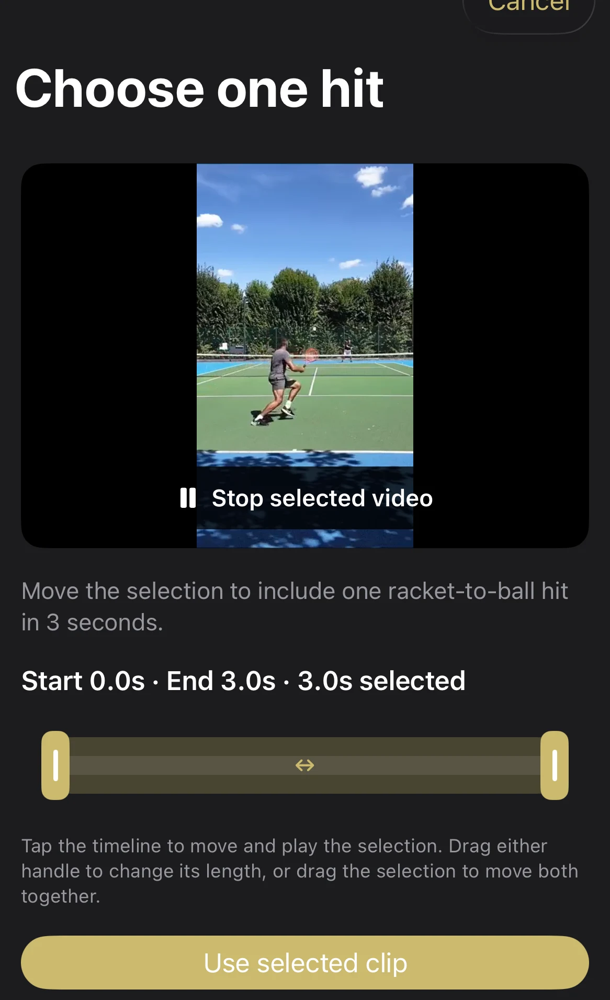
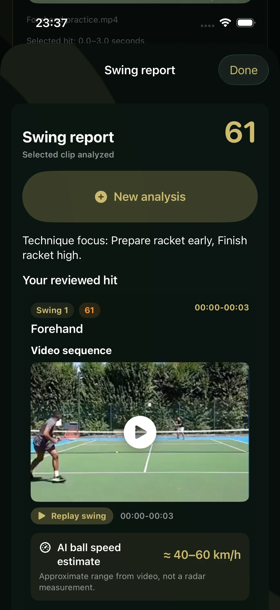
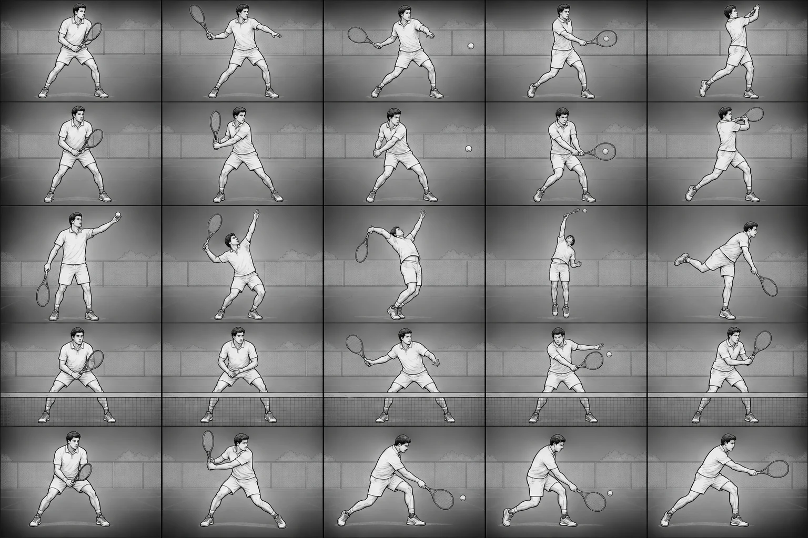

Bring your video
Record a stroke or import a recording. For longer footage, choose the short section you want to examine.
Tennis video review · By Smart Automation SRL
Your recording holds the details you missed on court. Review a hit, replay the moment and take useful technique cues to your next session.
Built in Moldova. Made for players everywhere.

Your recording →
One focused review →
Your next practice

An example from the app, enlarged for readability.
A clearer next step
A long camera roll is hard to learn from. Focus on one contact and review concrete things to try, with your own footage beside the feedback.
From footage to feedback
Record a stroke or import a recording. For longer footage, choose the short section you want to examine.
Select three seconds around one racket-to-ball contact and choose the stroke type before analysis.
Replay the clip, read the technique suggestions and choose a useful cue for your next session.
Build your understanding
Use the app’s illustrated stroke guides alongside your video review. Explore preparation, contact and follow-through across five stroke types.
The guides are learning illustrations. AI suggestions can be incomplete or incorrect and supplement, rather than replace, an in-person coach.

A moment worth reviewing
A short stroke clip makes the contact easy to revisit. Pair the replay with your analysis report, then choose one technique cue for your next practice.
Demonstration stroke clip from our review workflow. The report above is a separate app example.
Record · Review · Practice · Repeat
Revisit the same stroke over several sessions. Compare preparation, contact and follow-through to see what is becoming more consistent and what still needs attention.
Illustrative progression, not measured user results or a current app dashboard. Progress varies and is not guaranteed; these lines explain a practice routine rather than predict performance.
Before you start
The phone app focuses on a selected three-second stroke clip. It supports forehand, backhand, serve, volley and slice selection, replayable feedback and illustrated practice guidance. The App Store listing describes the current release.
No. It helps you review visible technique and decide what to practice. AI feedback may be incomplete or incorrect. It does not guarantee improvement or provide medical advice.
The app asks for permission before sending the selected clip to a third-party AI service for analysis. Read the app privacy policy for details about the current data flow and your choices.
TennisBlink is a project of Smart Automation SRL, a software company registered in the Republic of Moldova. For product or business questions, email imosnoi@smartaitomation.com.
Start with a recording. Find a useful thing to work on.